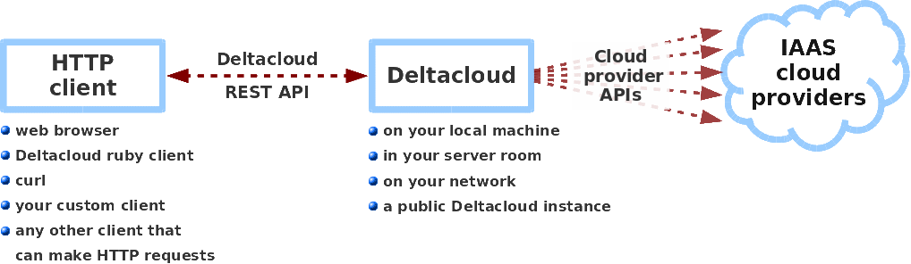

Deltacloud provides the API server and drivers necessary for connecting to the cloud providers. Install Deltacloud and start the deltacloudd daemon server. You can use your favourite HTTP client to talk to the server using the Deltacloud REST API. Deltacloud even comes with a HTML interface so you can simply use your web browser to control your cloud infrastructure straight out of the box. As of Deltacloud 0.4.0, the HTML interface is written with the jQuery mobile framework so it plays especially well with your mobile or tablet devices.
This page lists the location of the main 'bits' of Deltacloud - for more detailed information on getting and installing Deltacloud checkout out our installation and quick start guide.
Get Deltacloud
Deltacloud is available as a ruby gem. First make sure you have installed all the required dependencies, Then installing Deltacloud is as easy as typing:
$ sudo gem install deltacloud-core
And thats it! Yes, really. The gem install command will automatically fetch and install all other gems that the Deltacloud server needs if you don't already have these.
As an alternative you can get the latest releases of Deltacloud from the Apache website.
Getting the sources
More information for developers is available here.
The Apache Deltacloud subversion repo is at: https://svn.apache.org/repos/asf/incubator/deltacloud.
svn co https://svn.apache.org/repos/asf/incubator/deltacloud deltacloud
The Git repo is at: git://git.apache.org/deltacloud.git
git clone git://git.apache.org/deltacloud.git
The Deltacloud Ruby Client
The Deltacloud project also maintains a ruby client, which you need to install separately to the Deltacloud API server. The Deltacloud client consists of a ruby library (packaged as a ruby gem) which you can use to programmatically interact with the Deltacloud server and control your cloud infrastructure across cloud providers.
Assuming you already setup the required dependencies, you can install the Deltacloud by simply typing:
$ sudo gem install deltacloud-client
Installing the Deltacloud client also gives you the deltacloudc command line tool. This executable makes use of the Deltacloud client library to speak to the Deltacloud server using the REST API. More information on getting started with the Deltacloud Ruby client is available in the quick start guide.
libdeltacloud
A library for accessing the Deltacloud API from C/C++ programs.
You can get the source code:
$ git clone git://git.fedorahosted.org/deltacloud/libdeltacloud.git
Or you can download the RPMs for Fedora 12 and 13:
http://people.redhat.com/clalance/libdeltacloud
Contributed by Chris Lalancette.
Your name here
Do you have a tool to make Deltacloud more useful? Let us know and we'll add your contributions to this page!